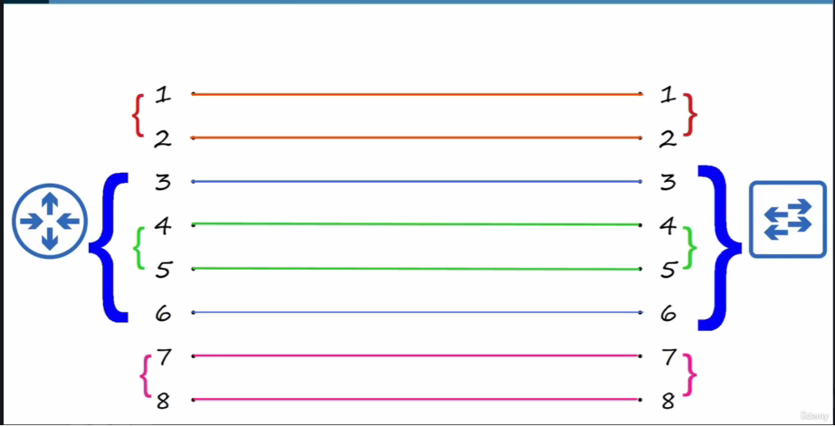
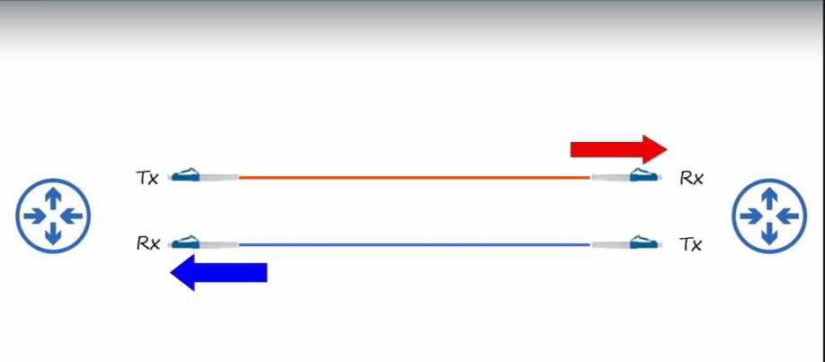

Introduction to CCNA
1. Network
Network (computer network) adalah jaringan yang menghubungkan komputer satu sama lain ataupun device lainnya. Atau computer network dapat didefinisikan juga sebagai jaringan komunikasi (communication network) yang dapat memungkinkan node untuk saling berbagi resource.
Node
Node adalah segala jenis device yang terkoneksi ke jaringan yang dapat mengirimkan, menerima dan meneruskan data melalui internet. Node dapat berupa PC, atau HP, dan juga infrastruktur jaringan yang dapat menghubungkan perangkat (routers, switch, firewall dan perangkat yang dapat membentuk jaringan).
Resource
Resource adalah semua hal yang dapat diakses dan digunakan melalui jaringan. Contohnya, printer yang terkoneksi dalam jaringan dan digunakan bersama oleh pengguna di kantor, dsb.
2. Network Devices
Type of Network Devices
Client-Server

Client disini sebagai device yang mengakses / meminta layanan kepada server. Server adalah sebuah device yang menyediakan layanan untuk client
Switch

Switch adalah sebuah perangkat yang dapat menghubungkan beberapa device (PC, Printer, Server, dll) agar dapat berhubungan dan berkomunikasi satu sama lain. Perangkat yang terkoneksi melalui switch dapat berkomunikasi satu sama lain melalui switch
Catatan mengenai Switch
Switch tidak dapat menyediakan layanan konektivitas antar LAN atau jaringan external, untuk melakukan hal tersebut dibutuhkan device lain.
Router

Router adalah sebuah perangkat yang menyediakan layanan agar LAN dapat berkomunikasi dengan jaringan eksternal seperti internet.
Catatan mengenai Wireless Router (Wi-Fi / home router)
Wireless Router (Wi-Fi / home router) adalah perangkat multifungsi yang menggabungkan router, switch, wireless access point, dan firewall dalam satu perangkat.
Firewall

Firewall adalah sistem yang berfungsi untuk memantau traffic jaringan yang masuk atau keluar ke perangkat host. Sistem ini kemudian dapat menentukan apakah traffic tersebut diizinkan atau diblokir berdasarkan serangkaian aturan yang telah ditetapkan.
LAN
Local Area Network (LAN) adalah sekumpulan perangkat (devices) yang saling terhubung dalam area terbatas,
contohnya seperti jaringan di kantor, rumah, kafe, dan lain sebagainya.
WAN
Wide Area Network (WAN) adalah sekumpulan jaringan yang saling terhubung satu sama lain dalam area yang luas, contohnya jaringan antar kantor, wilayah, kota atau bahkan negara.
Cisco Device Keyword
- Catalyst -> Cisco Switch (Cisco Catalyst)
- Router -> Cisco ISR (Integrated Service Router)
- Security -> Cisco ASA (Adaptive Security Appliance)
- Firepower -> Cisco NGFW (Next Generation Firewall)
3. Cable, Connectors and Ports
Ethernet
Ethernet adalah kumpulan dari protokol / standart jaringan.
RJ-45
RJ artinya Registered Jack
Bit and Bytes
-
Bit artinya Binary Digits ini adalah sistem angka yang hanya memiliki 2 nilai, yaitu 0 dan 1.
-
Byte adalah satuan dari penyimpanan data di dalam komputer. 1 Byte bernilai 8 Bit.
Internet Speed
Kecepatan internet dihitung berdasarkan satuan Bit bukan Byte.
Common unit Measuring of Bits
| Names | Equal to (Base 2) | Equal to (Base 10) |
|---|---|---|
| 1 Kilobit | 1,024 Bit | 1,000 Bit |
| 1 Megabit | 1,024 Kb | 1,000,000 Bit (1,000 Kilobit) |
| 1 Gigabit | 1,024 Mb | 1,000,000,000 Bit (1,000 Megabit) |
| 1 Terabit | 1,024 Gb | 1,000,000,000,000 Bit (1,000 Gigabit) |
Ethernet Standard (IEEE 802.3)
Tabel Ethernet Standard
| Speed | Common Names | IEEE Standard | Informal Name | Maximum Lenght Suport |
|---|---|---|---|---|
| 10 Mbps | Ethernet | 802.3i | 10BASE-T | 100 m |
| 100 Mbps | Fast Ethernet | 802.3u | 100BASE-T | 100 m |
| 1 Gbps | Gigabit Ethernet | 802.3ab | 1000BASE-T | 100 m |
| 10 Gbps | 10 Gig Etrhernet | 802.3an | 10GBASE-T | 100 m |
BASE-T
- BASE artinya Baseband.
- T artinya Twisted.
UTP (Unshilded Twisted Pair) Cable Ilustration

UTP Cable Standard
Tabel Standard Kabel UTP secara umum.
| Speed | Ethernet Informal Names | Cable Names |
|---|---|---|
| 10 Mbps | 10BASE-T | Cat3 |
| 100 Mbps | 100BASE-T | Cat5 |
| 1 Gbps | 1000BASE-T | Cat5e |
| 10 Gbps | 10GBASE-T | Cat6a |
UTP Cable Drawback
UTP Cable (10BASE-T, 100BASE-T)
Straight-through and Crossover Cables
- 10BASE-T: Menggunakan dua pasang (4 kabel)
- 100BASE-T: Menggunakan dua pasang (4 kabel)
- 1000BASE-T: Menggunakan empat pasang (8 kabel)
- 10GBASE-T: Menggunakan empat pasang (8 kabel)
Straight Throught Pair (STP) Cable

Straight Through Cable (STP) Cable
- Straigth-throught Cable: Ujung kabel disambungkan ke pasangan pin yang sama. Kabel STP biasanya digunakan untuk menghubungkan perangkat jaringan yang berbeda seperti antara PC dengan Router, Router dengan Switch, dsb.
Crossover Cable

Crossover Cable
- Crossover: Ujung kabel disambungkan ke pasangan pin yang berlawanan. Kabel crossover biasanya digunakan untuk menghubungan perangkan jaringan yang sama seperti antara PC dengan PC, Router dengan Router, Switch dengan Switch, dsb.
Common Device Type and Tx/Rx Pairs
Tabel pasangan Tx/Rx serta tipe Perangkat Jaringan nya
| Device Type | Transmit Pin (Tx) | Recive Pins (Rx) |
|---|---|---|
| Router | 1 and 2 | 3 and 6 |
| Firewall | 1 and 2 | 3 and 6 |
| PC/Server | 1 and 2 | 3 and 6 |
| Switch | 3 and 6 | 1 and 2 |
Auto MDI-X
Fitur yang bisa merubah atau menukar posisi Tx/Rx sehingga tidak perlu lagi memusingkan soal kabel straight-through atau crossover cable.
UTP Cable (1000BASE-T and 10GBASE-T)

Info
- Setiap pasangan pin secara bidirectional artinya setiap pasangan pin dikhusukan untuk satu tugas. Tx atau Rx saja.
Fiber Cable
Fiber Optic Connections

Single Mode and Multimode Fiber Optics Ilustration

Fiber Optics Cable Standard
Tabel Standard Kabel Fiber Optic
| Informal Name | IEEE Standard | Speed | Cable Types | Maximum Length |
|---|---|---|---|---|
| 1000BASE-X | 802.3z | 1 Gbps | Multimode and Single-mode | 550 M (MM) 5 km (SM) |
| 10GBASE-SR | 802.3ae | 10Gbps | Multimode | 400 m |
| 10GBASE-LR | 802.3ae | 10Gbps | Single-mode | 10 km |
| 10GBASE-ER | 802.3ae | 10Gbps | Single-mode | 30 km |
Lain-Lain
- Full Duplex: Transmit (Tx) dan Recive (Rx) secara bersamaan.
- Half Duplex: Transmit (Tx) dan Recive (Rx) secara bergantian.
UTP Cable vs Fiber-Optic
Tabel perbandingan kabel UTP dengan Fiber Optic
| UTP Cable | Fiber Optics |
|---|---|
| Harga lebih murah dibandingan fiber optic | Harga lebih mahal dibandingkan kabel UTP |
| Jarak jangkauan jauh lebih pendek dibandingkan kabel fiber optic (~100m) | Jarak jangkauan jauh lebih panjang / luas dibandingkan kabel UTP |
| Rentan terhadap Electromagnetic Interference (EMI) | Tidak ada kerentanan terhadap Electromagnetic Interference (EMI) |
| Port RJ-45 digunakan di UTP lebih murah dibandingkan Port SFP | Port SFP lebih mahal dibandingakan port RJ-45 (single mode fiber optic lebih mahal dibandingkan multimode fiber optic) |
| memancarkan kebocoran sinyal lemah di luar kabel yang dapat disalin (risiko keamanan) | Tidak memancarkan kebocoran sinyal lemah di luar kabel (tidak ada risiko keamanan) |
4. OSI dan TCP/IP Model
OSI Model
Gambar OSI Model beserta penjelasan masing-masing layer

Penjelasan Layer OSI Model
| No | OSI Layer | Fungsi / Penjelasan | Unit Data |
|---|---|---|---|
| 7 | Application Layer | Proses aplikasi end-user (browser, email client, dll.) | Data |
| 6 | Presentation Layer | Encryption (SSL/TLS), decryption, compression dan formatting media | Data |
| 5 | Session Layer | Start atau stop session (manajemen sesi) dan mengontrol port | Data |
| 4 | Transport Layer | Memilih protokol (TCP/UDP), memecah paket menjadi beberapa bagian, error handling | Segment |
| 3 | Network Layer | IP addressing dan routing antar jaringan | Packet |
| 2 | Data Link Layer | Media Access Control (MAC) addressing | Frame |
| 1 | Physical Layer | Physical hardware (Fiber optics, RJ45), mentransmisikan sinyal fisik | Bits |
OSI Model Mnemonics
Tabel perbedaan OSI Model dan TCP/IP